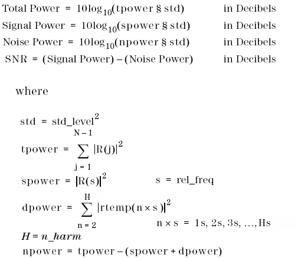
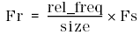

DSP_SNR
This API computes the signal-to-noise ratio (SNR), signal power (of frequency specified
by rel_freq), and noise power in decibels by using FFT operations to compute the
src spectrum as follows:
First, src is transformed into COMPLEX values c(j)
as follows:
DSP_FFT( src, c, size, RECT);
Then, for 1
≤ j ≤ size/2 - 1, COMPLEX values rtemp(j) are calculated by adjusting
COMPLEX values c(j).
R(j) is calculated by filtering
(filter) as
follows:
rtemp(j) = c(j) × 2/size R(j) = |(rtemp(j))| × filter [j]
The values are then calculated as follows:

This API is defined in the header file /opt/hp93000/soc/prod_com/include/MAPI/libdsp.h.
Syntax
DSP_SNR(ARRAY_I& src, DOUBLE *snr, DOUBLE *signal_power, DOUBLE *noise_power, INT rel_freq,INT n_harm, DOUBLE std_level, ARRAY_D& filter); DSP_SNR(INT *src, DOUBLE *snr, DOUBLE *signal_power, DOUBLE *noise_power, INT size, INT rel_freq, INT n_harm, DOUBLE std_level, DOUBLE *filter); DSP_SNR(ARRAY_D& src, DOUBLE *snr, DOUBLE *signal_power, DOUBLE *noise_power, INT rel_freq, INT n_harm, DOUBLE std_level, ARRAY_D& filter); DSP_SNR(DOUBLE *src, DOUBLE *snr, DOUBLE *signal_power, DOUBLE *noise_power, INT size, INT rel_freq, INT n_harm, DOUBLE std_level, DOUBLE *filter);
I/O |
Parameter |
Description / Range |
|---|---|---|
I |
src |
Source array
|
O |
snr |
SNR value within source in decibels size / 2 ≤ (size of result array) |
O |
signal_power |
Signal power value within source in decibels |
O |
noise_power |
Noise power value within source in decibels |
I |
size |
Number of elements to be processed 8 ≤size≤ 2097152 size≤ (size of source array) size can be any integer in the above range. In the case that size is not power of two, the Xpress data mode must be enabled in order to process the elements.
|
I |
rel_freq |
Number of measured signal periods, which is used to calculate the relative frequency 1 ≤rel_freq≤ (size / 2) - 1 |
I |
n_harm |
Number of harmonics for SNR calculation 1 ≤rel_freq≤ (size / 2) - 1 |
I |
std_level |
The std_level is used for scale adjustment of In output mode "DB" this value corresponds to the 0dB level and in the output modes "VOLT" and "PWR" it corresponds to the 1.0 value. If it is set to "0" the maximum element in the spectrum is set 0 dB or 1.0 respectively. To adjust the scale to dBm at any general impedance (Z) specify std_level = sqrt(2) * sqrt(Z/1000). If output_mode=VOLT and std_level=1, the resultant values are Vpeak. If output_mode=VOLT and std_level=1.414, the resultant values are Vrms. If output_mode=DB and std_level=1.414, the resultant values are dBV. |
I |
filter |
An array containing the filter transfer function Each element corresponding to a result array element size / 2 ≤ (size of filter) NULL (0): filtering is not performed. |
The relative frequency Fr, which is the fundamental frequency for SNR
calculation, is defined as follows:

where Fs is the sampling frequency.
Example
DSP_SNR performs the FFT operations and calculations, and returns the
results to snr,signal, and
noise.
double time_array[1024]; double snr,signal,noise; . . DSP_SNR(time_array, &snr, &signal, &noise, 1024, 1, 3, 0.0, NULL);
Functional changes
- Introduced before SmarTest 6.3.2
- SmarTest 6.5.2: The size parameter is not restricted to the power of two.